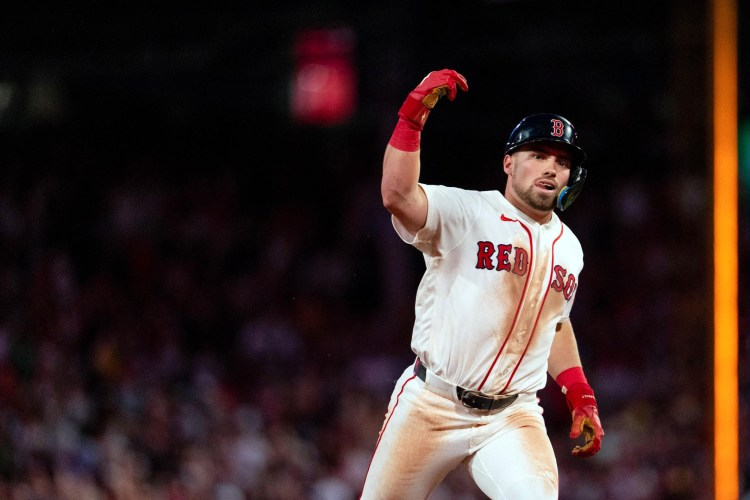
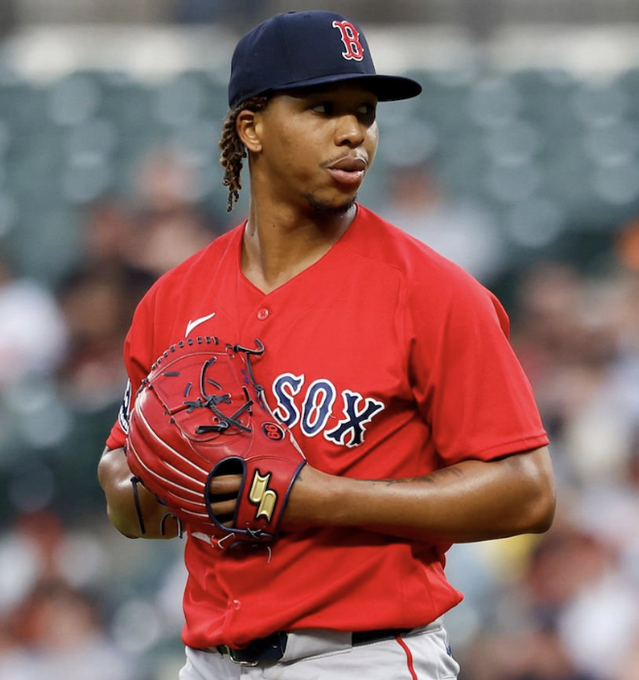

Offensive race94.3
James Wood
Washington Nationals
James Wood is building one of baseball’s strongest offensive cases
OPS 0.941; race score 96.7.
Intelligence for the ’hood
The SABRhood combines pitch-level research, daily signals, simulation, history, and journalistic reporting for fans and broadcasters.
The engine hand picks new stories to keep things fresh.
Washington Nationals
James Wood is building one of baseball’s strongest offensive cases
OPS 0.941; race score 96.7.
Milwaukee Brewers
Jacob Misiorowski is suppressing offense at an elite rate
OPS allowed 0.450; race score 94.1.
Milwaukee Brewers
Milwaukee Brewers has a new league-wide reporting lead
Milwaukee Brewers ranks 5th in offensive quality and 2nd in run prevention, with a ready bullpen and 1 surge signals.
Los Angeles Dodgers
Freddie Freeman reached 2,500 career hits
Career estimate 2,548.
Our engine searches for the players with the most movement against there season averages.
Athletics | LHB
Walk rate is the largest recent shift: improving by 5.0 standard deviations versus the MLB change pattern. Season level: 72nd percentile.
Colorado Rockies | RHP
Run value allowed per PA is the largest recent shift: declining by 4.3 standard deviations versus the MLB change pattern. Season level: 2nd percentile.
Minnesota Twins | RHP
Estimated wOBA allowed is the largest recent shift: declining by 4.4 standard deviations versus the MLB change pattern. Season level: 71st percentile.
Texas Rangers | LHP
Strikeout rate is the largest recent shift: improving by 3.8 standard deviations versus the MLB change pattern. Season level: 35th percentile.
The future daily board will report a lean, a score range, and the factors behind the number — never a naked percentage.
Original stories crafted from our own research engine.

There is a heat wave in Boston, centralized entirely in Caleb Durbin’s bat.

A pitch-level look at Brayan Bello’s arsenal, results, and changing approach.
Can an early-season call-up change the direction of a club searching for a spark?
Taking you to every clubhouse around the league.
| Rank | Team | Index | Offense | Run prev. | Surging | Pen | Top driver |
|---|---|---|---|---|---|---|---|
| 1 | Milwaukee Brewers | 88.1 | 5 | 2 | 1 | ready | Joey Ortiz (Hitter) |
| 2 | Los Angeles Dodgers | 82.1 | 1 | 1 | 0 | ready | Roki Sasaki (Pitcher) |
| 3 | Tampa Bay Rays | 68.1 | 8 | 7 | 2 | ready | Nick Fortes (Hitter) |
| 4 | Texas Rangers | 66.0 | 14 | 13 | 2 | ready | Robby Ahlstrom (Pitcher) |
| 5 | Atlanta Braves | 65.2 | 7 | 5 | 2 | ready | Drake Baldwin (Hitter) |
| 6 | Chicago Cubs | 64.0 | 4 | 27 | 2 | ready | David Peterson (Pitcher) |
| 7 | Washington Nationals | 60.5 | 3 | 26 | 3 | ready | CJ Abrams (Hitter) |
| 8 | Detroit Tigers | 59.7 | 20 | 4 | 2 | ready | Hao-Yu Lee (Hitter) |
Research catered to you
Awards races, season leaders, matchup splits, daily historical notes, simulations, and reporting leads—organized around the questions baseball people actually ask.